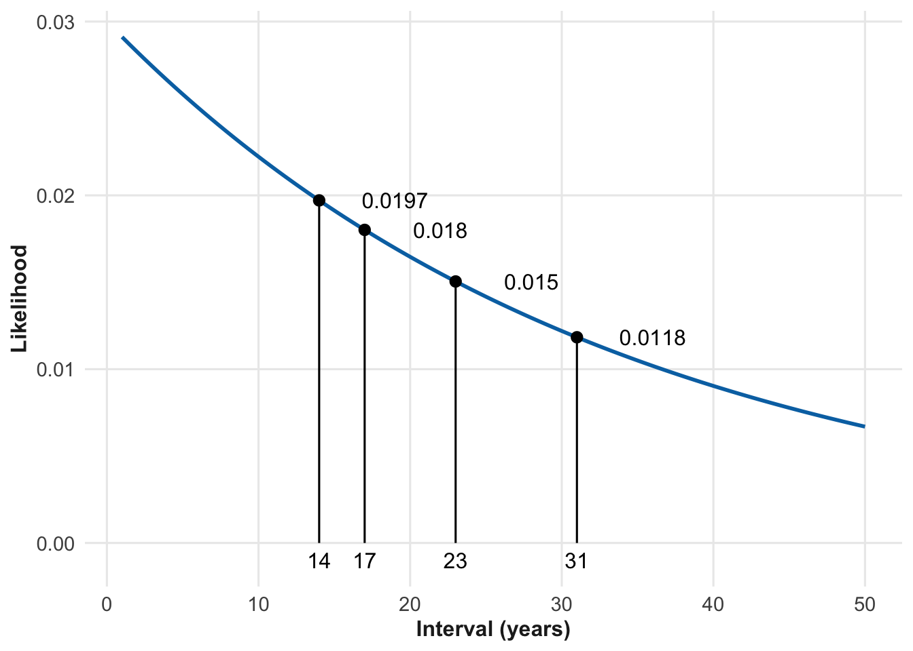
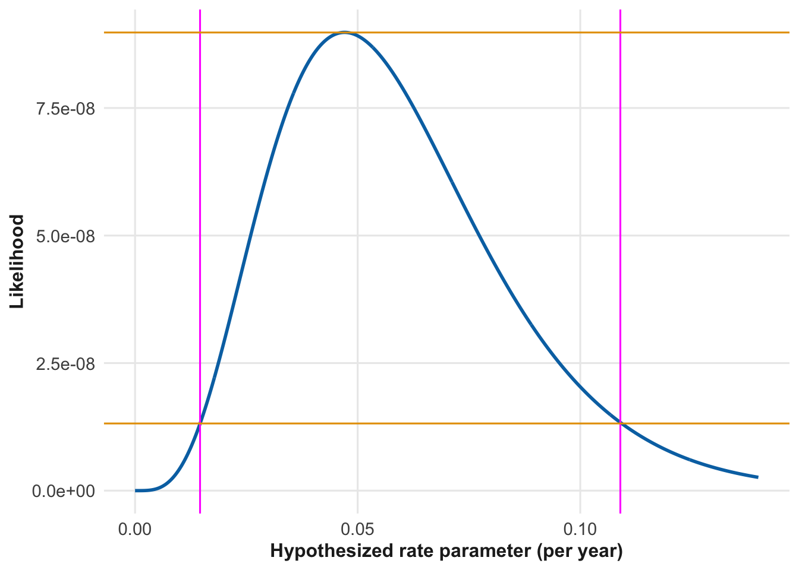
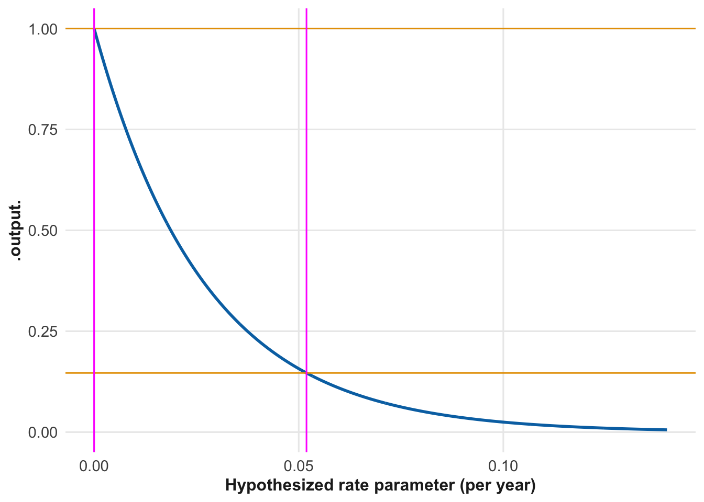
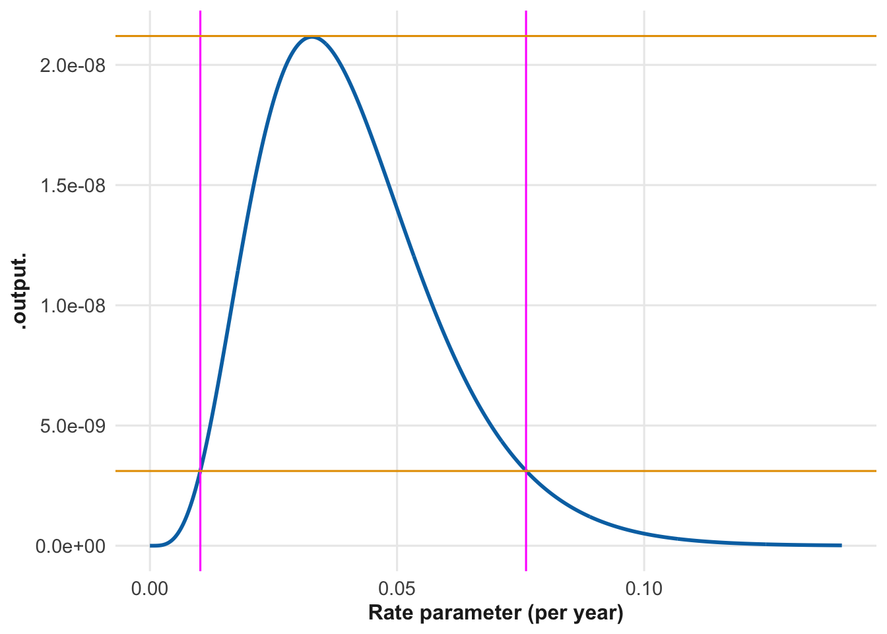

11 Hypothesis and likelihood
Vocabulary Review
- bayesian (8)
- data (2)
- exponential distribution (8)
- hypothesis (8)
- magnitude (5)
- models (1)
- objective function (10)
- per (3)
- point (3)
- probability distributions (8)
- quantity (3)
- rate (4)
- system (6)
- uncertainty (8)
- value (2)
New
- likelihood
- likelihood framework
- null hypothesis
- scientific method
We build models based on our understanding of the systems being modeled. Naturally, this understanding is not perfect. Indeed, there can be honest dispute about how a system operates and what factors are most important in influencing its behavior.
In many (most?) settings, it is not realistic to expect the modeler to get things right the first time, or even after several tries. Effective modelers treat their work as an application of the ☞ scientific method ☜, iteratively refining their models based on insight and evidence.
Such refinement depends on the ability to compare models to one another and pick the better one. In the language of Chapter 10, we might call this finding an “optimal” model. We will do this by developing an objective function that takes competing models as input and returns as output a numerical measure of each model’s performance.
The method is standard in many areas of science, technology, commerce, and any field where decisions must be taken. The standard terminology, however, is not usually about comparing models. The word used most often is “hypothesis.” The two words—“model” and “hypothesis”—are closely related. Every model is a formalized implementation of a hypothesis about how the system being modeled works.
There are many definitions for the word hypothesis. Often, the definitions emphasize the ☞ scientific method ☜, one description of which is called the ☞ hypothetico-deductive method ☜, as described here. In the context of the scientific method, a reasonable definition for “hypothesis” is along the lines of the following, offered by an AI prompted to define “hypothesis” specifically in the context of the scientific method:
A hypothesis is a testable explanation for a phenomenon that serves as a starting point for further investigation through experimentation or observation.
We often think of hypotheses (and the models that implement them) as developing over time, as implied by the phrase “further investigation.” But for the purposes of comparing and competing hypotheses, a better picture is that of a set of models all present at the same time, like the candidates in an election.
To choose the best among the hypotheses, we need to be able to compare them to one another in terms of their ability to account for observed data and make accurate predictions. The numerical measure, the output of our objective function, is a quantity called ☞ likelihood ☜.
11.1 The likelihood framework
Chapter 8 discussed how to use probability distributions to quantify uncertainty. Section 8.2 introduced a Bayesian notion of where probability distributions come from: they are hypotheses concocted by humans.
In the ☞ likelihood framework ☜, we replace ideas about individual hypotheses being correct or incorrect, right or wrong, true or false. Instead, we consider collections of hypotheses, putting them into competition with one another, just as sports playoffs pit different athletes or teams against one another. In sports, a higher score gives a team a claim to being better than the opponent.
In the likelihood framework, the competing entities are hypotheses represented by probability distributions about the relative probability of each possible observed outcome. The “score” for each competing hypothesis is the “☞ likelihood ☜.” And just as sports teams compete in a particular setting—a game or match—hypotheses compete in a setting: data.
The reader who has never heard of “likelihood” in this sense may wonder if the framework is the right or best one for placing hypotheses into competition. We turn to the field of statistics to answer. As described in Section 8.2, Bayesian and Frequentist statisticians fundamentally disagree. Despite their conflicting stances, both camps put likelihood at the center of their methodologies.
To illustrate how likelihood works, consider how to model uncertainty in the time interval between major events, for example, the time between economic depressions or the time between magnitude 6.5+ earthquakes in a region.
To be specific, suppose we have data on the timing of the last five events of some kind: say, earthquakes occurring in 1905, 1919, 1950, 1973, and 1990. We would like to model the uncertainty in the timing of the next event based on these observations. We have information on five observed intervals between consecutive earthquakes. Four of them are definite: The four completed intervals. 14 years between 1905 and 1919, 31 years between 1919 and 1950, 23 years between 1950 and 1973, and 17 years between 1973 and 1990. The fifth interval, between 1990 and the next event, is unknown. This doesn’t mean that we have no information about it. At this time of this writing, 2027, we know the fifth interval is at least 37 years long.
The standard model for the interval between random events is the exponential distribution. This has one parameter, the rate. A good choice of rate is the one most consistent with the data. Likelihood provides the measure of consistency between a hypothesized rate and the observed intervals. The exponential function Figure 11.1 shows the likelihood of any one interval observation for a hypothesized rate of 0.03 events per year. Each of the observed complete intervals—14, 17, 23, and 31 years—has been marked in the graph.
The likelihood for each individual observation is the value of the likelihood function at that observation. For instance, the likelihood of an interval of 14 years is 0.0197. When there are multiple observations, we need to combine their likelihoods. How to accomplish this?
The answer comes from the same feature of probability arithmetic that you may have encountered in games (or in math classes about games). For instance, the probability of rolling a 5 with a die is 1/6. The probability of rolling a 5 twice in a row involves combining the individual probabilities by multiplication: 1/6 \(\times\) 1/6 = 1/36.
The overall likelihood of our four observations—intervals of 14, 17, 23, and 31 years—is the product of their individual likelihoods: #\(0.0197 \times 0.0180 \times 0.0150 \times 0.0118 = 6.325e-8\ .\)$ This number is very small in magnitude. That’s because there are very many other possibilities for the intervals that could have been observed, say, 12, 19, 24, 28 and such. Since there are so many similar sets of numbers, the likelihood of observing any particular one is small. As you’ll see, the ultimate use of likelihoods is to compare them one to another, that is, to compare their relative size.
If all we had were the four completed intervals, the overall likelihood of 6.325e-8 would be the value we assign to the specific hypothesis of an exponential distribution with a rate parameter of 0.03. We are going to put this specific hypothesis into a competition for the best hypothesis. As described in Chapter 10, to define “best,” we need an objective function whose input will be the rate parameter and whose output will be the overall likelihood of our observed data—14, 17, 23, and 31 year intervals between earthquakes—under that hypothesis.
By carrying out the same calculations we did for a rate of 0.03, we can find the likelihood for other rates. These are displayed in Table 11.1. The workflow is this, for each row:
- set the hypothesized rate
- compute the likelihood of each observation under that rate
- multiply these likelihoods to get the overall likelihood for the row.
This is repeated for each hypothesized rate. For the sake of conciseness, Table 11.1 shows only five hypothesized rates. See Figure 11.2 for a more complete picture.
| hypothesized rate | 14 | 17 | 23 | 31 | overall |
|---|---|---|---|---|---|
| 0.03 per year | 0.0197 | 0.0180 | 0.0150 | 0.01180 | 6.33e-8 |
| 0.04 per year | 0.0228 | 0.0203 | 0.0159 | 0.01160 | 8.54e-8 |
| 0.05 per year | 0.0248 | 0.0214 | 0.0158 | 0.01060 | 8.92e-8 |
| 0.06 per year | 0.0259 | 0.0216 | 0.0151 | 0.00934 | 7.90e-8 |
| 0.07 per year | 0.0263 | 0.0213 | 0.0140 | 0.00799 | 6.26e-8 |
From the overall likelihood for each of the hypothesized rate parameters shown in Table 11.1, we can see that an earthquake rate of 0.05 / year is more likely than our original hypothesis of 0.03 / year. But we can say more. The likelihood ratio comparing the 0.05 per year hypothesis to the 0.03 per year hypothesis is 1.41. Table 11.2, to be introduced in the next section, translates likelihood ratios into verbal statements of relative support. A likelihood ratio of 1.41 is really “no evidence” in favor of 0.05 per year versus 0.03 per year. The reason for this wimpy result is that four observations is a tiny amount of data.
If we can’t argue for the 0.05 per year hypothesis over the 0.03 per year hypothesis based on the four complete observations, what possible hypotheses can we rule out? To illustrate this, we’re going to extend the calculations shown in Table 11.1 to a wider range of hypothesized rates and plots the results in Figure 11.2.
Scale for y is already present.
Adding another scale for y, which will replace the existing scale.
The four completed intervals are consistent with a wide range of event rates. Said another way, the estimate of the accident rate from the four completed intervals is not very precise. Statisticians often quantify precision in this context by using the \(\pm\) notation. For instance, an estimate of \(0.03 \pm 0.01\) would indicate “95-percent confidence” that the true rate parameter lies within the interval \(0.02\) to \(0.04\).
Technical point: We’re using the likelihood function as if it were a probability distribution. This is a common practice in “frequentist” statistics, the sort taught in conventional statistics courses. In Chapter 12 we’ll show the mathematical Bayesian method for conversion of likelihood functions to probability distributions.
What about the fifth interval, the one that started in 1990 and has not yet been closed by another earthquake? That unclosed interval also has relevant information. Informally, the earthquake-free period of 37 years (up to the date of writing) suggests a low earthquake rate. More formally, we can translate the exponential probability model for time between earthquakes into a probability of observing no earthquake since the 1990 one. This probability distribution informs the likelihood for the observation of “no earthquake yet” for a range of different hypothesized earthquake rates. UNRESOLVED fig-likelihood-curve2 shows this likelihood function.

The likelihood function in UNRESOLVED fig-likelihood-curve2 shows that the observation of no earthquake since 1990 argues for a low earthquake rate. The 95% interval is inconsistent with that from Figure 11.2. That’s because they are based on different observations: the four completed intervals versus the incomplete interval since 1990.
Multiplying the likelihood functions from Figure 11.2 and UNRESOLVED fig-likelihood-curve2 gives the likelihood function for all five observations, four complete intervals and the one incomplete one. UNRESOLVED fig-likelihood-curve3 shows this combined likelihood.

Note that the vertical scales differ in the graphs of the likelihood functions. That’s of no concern, since it is the relative likelihood that matters.
11.2 Putting numerical evidence into words
A likelihood ratio is a measure of the strength of evidence. In interpreting likelihood, verbal ideas like “weak” evidence, “moderate,” and “strong” turn out to correspond to the magnitude of the likelihood ratio, where “magnitude” is used in the sense of Chapter 5.
The translation of a continuous quantity into a small set of verbal descriptions necessarily involves imposing some breakpoints. Table 11.2 provides a widely accepted set of breakpoints for translating the magnitude of the likelihood ratio into a verbal interpretation.
| Magnitude | Likelihood ratio |
Verbal interpretation |
|---|---|---|
| 0 | 1 | No evidence. |
| 1 | 10 | Limited evidence to support the hypothesis. |
| 2 | 100 | Moderate evidence to support the hypothesis. |
| 3 | 1000 | Moderately strong evidence to support the hypothesis. |
| 4 | 10000 | Strong evidence to support the hypothesis. |
In accepting the verbal interpretations in Table 11.2 we are relying on the experience of past researchers. There’s nothing wrong with that. But it would be nice to have a definite interpretation of what “limited” or “moderate” evidence constitutes. The mathematics of likelihood provide a means to do this.
First, there’s general consensus among statisticians and scientists that a likelihood ratio of 10,000 is sufficient to satisfy the criterion for “strong evidence” in favor of a hypothesis. Now, imagine that your observations have yielded a likelihood ratio of 100. How much more evidence would you need to collect to reach a ratio of 10,000. One answer is, you can’t know for sure because you don’t know in what direction the new evidence will point.
But assume you are excited enough about your existing evidence to believe it will be worthwhile to continue collecting data. Your excitement leads you to suspect that the additional data will point in approximately the same direction as your current evidence. (But there is never a guarantee!) If your suspicion were correct, you would have to plan to double the amount of data you use to calculate the likelihood ratio. A nice way to do this would be to have some other researcher confirm your earlier results while doubling the amount of data overall.
Suppose you flip a coin 10 times and get 6 heads. Are you justified in believing the coin is biased toward heads? To answer this question, you need to compare two hypotheses. One hypothesis is that the coin is not biased, that is, the likelihood of getting a head is 0.5. Statisticians refer to such a “nothing-out-of-the-ordinary” hypothesis as a ☞ Null hypothesis ☜. You need another hypothesis to compare it to, a hypothesis that specifies what is the amount of bias. Let’s call this the “research hypothesis.”” For instance, you might consider a research hypothesis that the likelihood of getting a head is 0.6.
Under the Null hypothesis the likelihood of getting 6 heads and 4 tails is:
\[\underbrace{0.5 \cdot 0.5 \cdot 0.5 \cdot 0.5 \cdot 0.5 \cdot 0.5}_\text{For the heads} \cdot \underbrace{0.5 \cdot 0.5 \cdot 0.5 \cdot 0.5}_\text{For the tails} = 0.0010\]
Under the research hypothesis, the likelihood of getting 6 heads and 4 tails is:
\[\underbrace{0.6 \cdot 0.6 \cdot 0.6 \cdot 0.6 \cdot 0.6 \cdot 0.6}_\text{For the heads} \cdot \underbrace{0.4 \cdot 0.4 \cdot 0.4 \cdot 0.4}_\text{For the tails} = 0.0012\]
The likelihood ratio comparing the research hypothesis to the Null hypothesis is 1.2. This provides no reason to favor the research hypothesis. But, like a detective hunting for the criminal, you can try to collect more evidence, that is, more data.